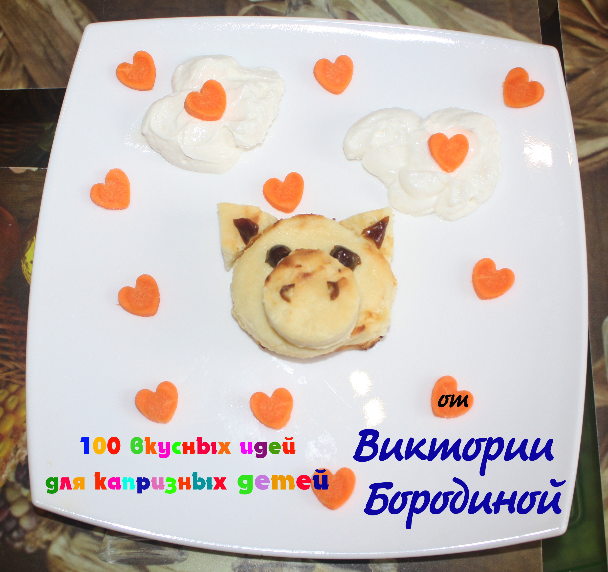
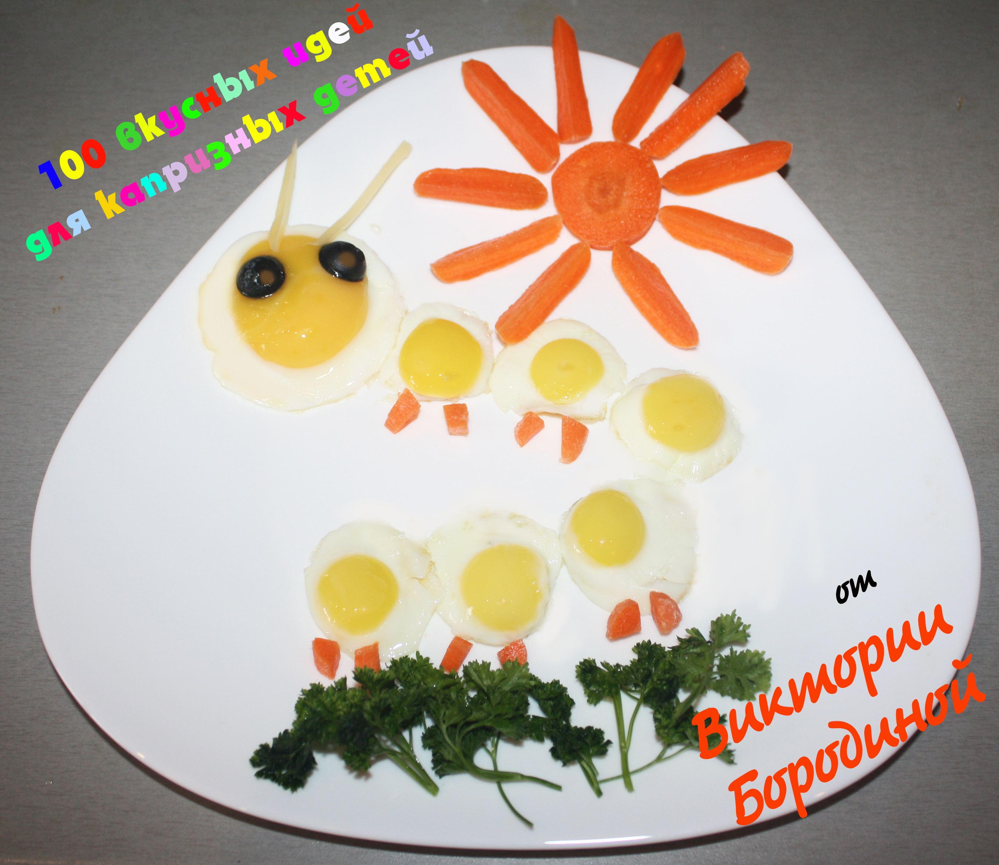

Поросёнок из сырников
Кто любит сладкие сырники на завтрак?! Правильно, все! И Ваш малыш непременно их полюбит, если Вы предложите их ему в таком шуточном виде – в виде поросёнка. На приготовление сырников и сервировку блюда уйдёт не больше 15 минут.
Если разогревать готовые сырники, то Вы уложитесь в 5 минут!

Краб из сырника и банана
Сырник с бананом в виде смешного крабика непременно порадует маленького лакомку. А готовится такое блюду буквально за считанные секунды.

Гусеница-яичница
Яичница на завтрак – это классика. Яичница в виде весёлой гусеницы – это незабываемый завтрак для Вашего малыша. На приготовление и сервировку блюда уйдёт не больше 5 минут..